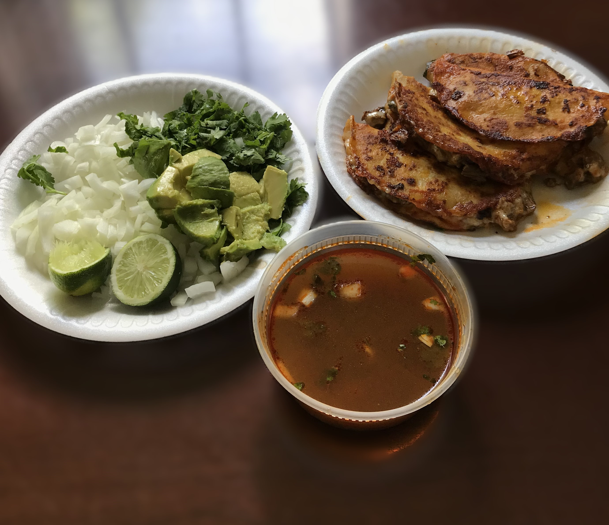

Roll out the dough and place it on a baking sheet.
Spread pizza sauce on the dough.
Add cheese and pepperoni on top.
Sprinkle with oregano and red pepper flakes.
Bake for 12–15 minutes until the crust is golden and cheese is melted.
Let it cool slightly before slicing.
Grilled Shrimp Rice & Vegetables
Ingredients:
1 lb shrimp (peeled)
1 cup white rice
Tomatoes
Onions
Bell peppers
2 cups of veggies of your choice.
Instructions:
(Cook the Rice) In a cooking pot.
Cook chopped bell pepper, onion, and tomatoes.
In oil for 2-3 minutes. Add rice and 2 cups of water.
Bring to a boil, cover, and simmer 15 minutes or until done.
(Grill the shrimp) Mix shrimp in oil, lemon juice.
Add Tony's Creole. Grill in a pan or on skewer for 2-3 minutes each side until pink.
(Cook the veggies) In a pan, cook your veggies in oil on medium and add Tony's Creole.
Cook for 5-7 minutes until tender.
Bacon Wrap Shrimp
Ingredients:
Lettuce
Tomatoes
Sliced Avocado
Monterey Jack Cheese
Bacon
Shrimp
Rice
Queso
Sliced Fresh Jalapenos
Instructions:
Peel the shrimp and slice the jalapeños.
Place a jalapeño strip and some Monterey Jack cheese on each shrimp, then wrap them with bacon.
On a plate, arrange sliced tomatoes, avocado, and lettuce around the edges.
Fry the bacon-wrapped shrimp until the bacon is crispy and the shrimp is cooked through.
Plate the shrimp in the center and add a scoop of rice.
Drizzle warm queso over the rice before serving.
Birria Tacos

Ingredients:
2.5 lbs beef chuck roast
4 dried Ancho chiles
4 Garlic Cloves
1 tsp cumin
Oregano
4 cups Beef Broth
Salt and Pepper
1 Onion and Cilantro
Lime wedges
Monterey Jack Cheese
Instructions:
Remove the stems and seeds from the ancho chiles, then boil them until soft.
Blend the softened chiles with garlic, onion, cumin, oregano, and a bit of beef broth to make a rich sauce.
Season the beef chuck roast with salt and pepper, then sear it in a large pot.
Pour in the blended chile sauce and the rest of the beef broth, cover, and simmer for about 3 hours until the meat is tender and easy to shred.
Shred the beef and dip corn tortillas into the top of the broth, then fry them on a skillet with Monterey Jack cheese and the shredded meat.
Garnish the tacos with chopped onion, cilantro, and a squeeze of lime before serving.
Breakfast Plate
Ingredients:
Sausage Patties
Eggs
Biscuits
Hash Browns
White Gravy
Instructions:
Peel and shred potatoes for the hash browns, rinse and squeeze dry, then fry in oil until golden and crispy, seasoning with salt and pepper.
For white gravy, melt butter, whisk in flour, and slowly add milk, stirring until thick; season with salt and black pepper.
Fry sausage patties and use the leftover drippings to add flavor to your gravy.
Crack eggs into a skillet and fry to your liking.
For the biscuits, mix flour, baking powder, baking soda, and salt, then cut in the cold butter until crumbly, add buttermilk, mix, roll out, cut, and bake at 425°F for 12–15 minutes until golden.
Serve everything hot and fresh for a perfect homemade breakfast.
Tex-Mex Burrito
Ingredients:
Flour Tortilla
Shredded Cheddar Cheese
Ground Beef
Olive Oil
Fajita Seasoning
Enchilada Gravy
Instructions:
Cook the ground beef in olive oil until browned, then stir in fajita seasoning and cook for another minute.
Warm the flour tortillas and sprinkle shredded cheddar cheese on each.
Add the seasoned ground beef and more cheese inside the tortillas, then roll them up tightly.
Place the burritos in a baking dish and pour warm enchilada gravy over the top.
Sprinkle extra shredded cheddar cheese over the gravy and bake at 400°F for 10 minutes until the cheese is melted and bubbly.
Chicken Fried Chicken
Ingredients:
Flour
Milk
Salt and Pepper
Olive Oil
Chicken Breast
Instructions:
Mix flour with salt and pepper in a shallow dish.
Pound the chicken breasts to even thickness, then dredge them thoroughly in the seasoned flour.
Heat olive oil in a skillet over medium-high heat until it reaches about 350°F (175°C), then fry the chicken for 4–5 minutes per side until golden and cooked through.
Remove the chicken and drain on paper towels.
For the white gravy, use the leftover oil, whisk in a tablespoon of flour, then slowly add milk while stirring until thick and creamy; season with salt and pepper.
Serve the crispy chicken topped with warm white gravy for a classic comfort meal.
Nachos
Ingredients:
Fajita Beef
Corn Chips
Refried Beans
Chili Con Queso
Lettuce and Tomatoes
Pickled Jalapenos
Sour Cream and Guacamole
Instructions:
Arrange about 14 tortilla chips on a plate and spread cooked beans evenly over them.
Pour warm chili con queso generously on top of the chips and beans.
Add cooked fajita beef over the cheesy layer.
In the center, pile on sour cream, guacamole, shredded lettuce, diced tomatoes, and pickled jalapeños.
Chili Rellenos
Ingredients:
Poblano Peppers
Ground beef
Enchilada Gravy
Monterey Jack Cheese
Salt and Pepper
Instructions:
Preheat the oven to 350°F and lightly grease a baking dish.
Roast the poblano peppers over an open flame or under the broiler until the skin is charred, then peel and remove seeds.
Cook ground beef in a skillet with salt and pepper until browned, then drain any excess grease.
In the baking dish, layer half the roasted poblanos, then a layer of cooked beef, followed by shredded Monterey Jack cheese.
Repeat layers and pour enchilada gravy evenly over the top.
Bake uncovered for about 15 minutes until hot and bubbly, then serve warm.